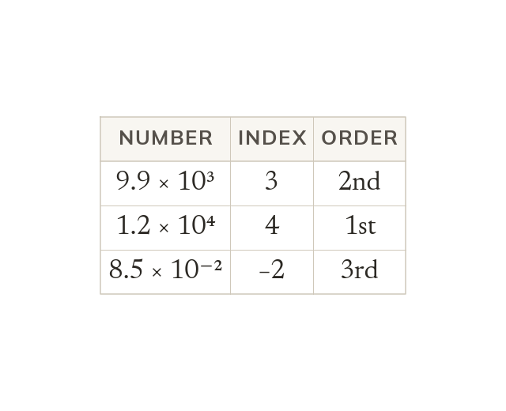

Order by the index first
Order standard form numbers by index first. Compare A only when the indices are equal. A negative index is smaller than a positive one.
Standard form numbers are ordered first by index, and only by A when two indices are equal, because a bigger index always represents a bigger value regardless of A. A negative index is always smaller than a positive one, for the same reason.